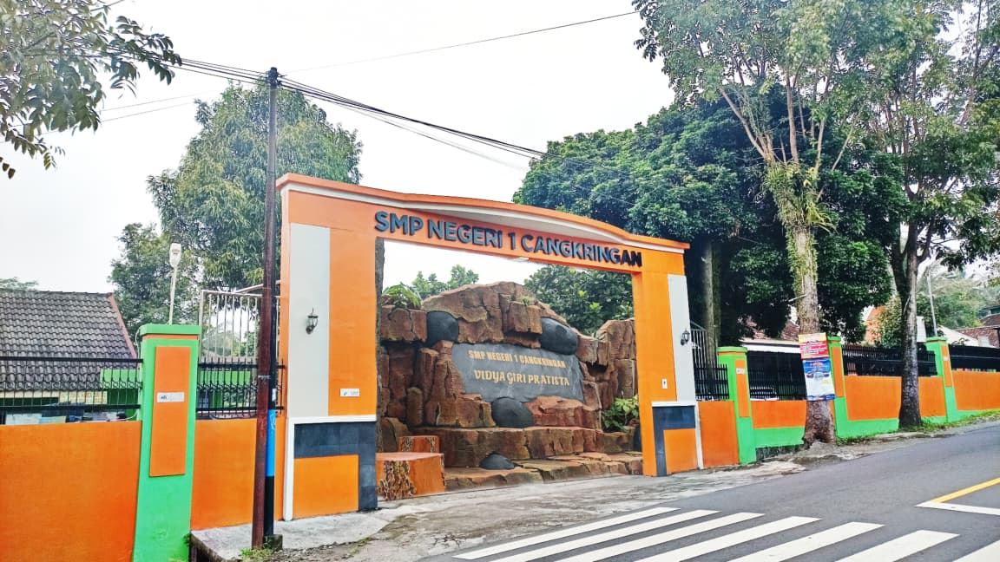

Jejak Kegiatan
Galeri Video Kegiatan Sekolah
Saksikan dokumentasi berbagai kegiatan, program, dan prestasi warga SMP Negeri 1 Cangkringan dalam bentuk video.
8
Video Dokumentasi
Koleksi
Semua Video
Video tidak ditemukan.